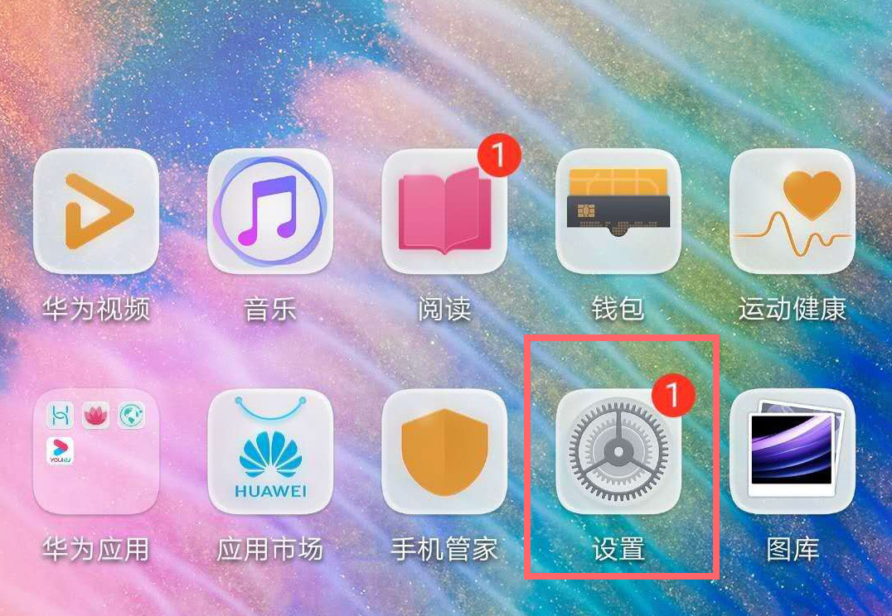
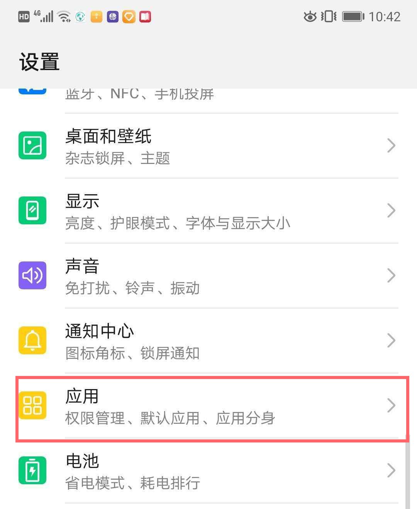
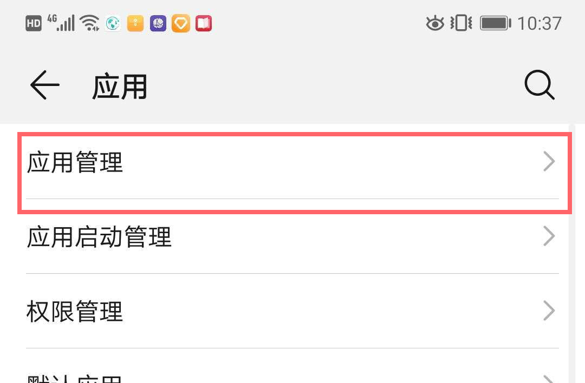
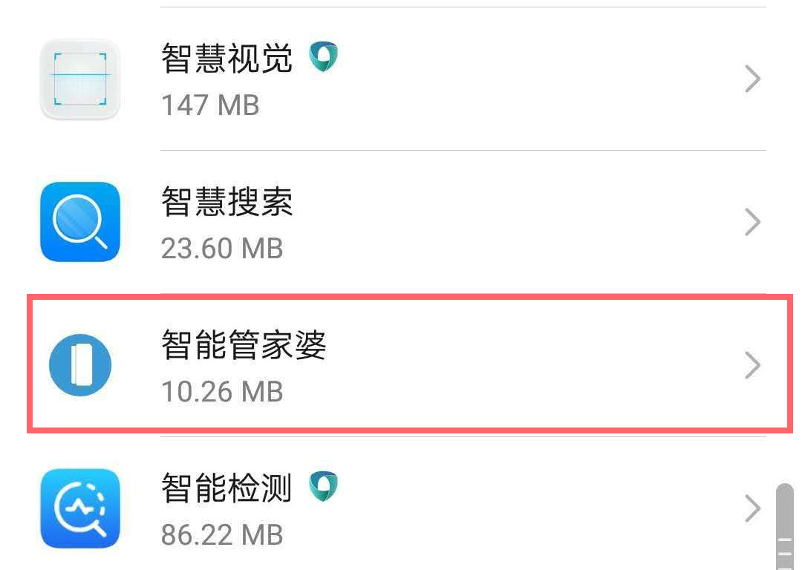
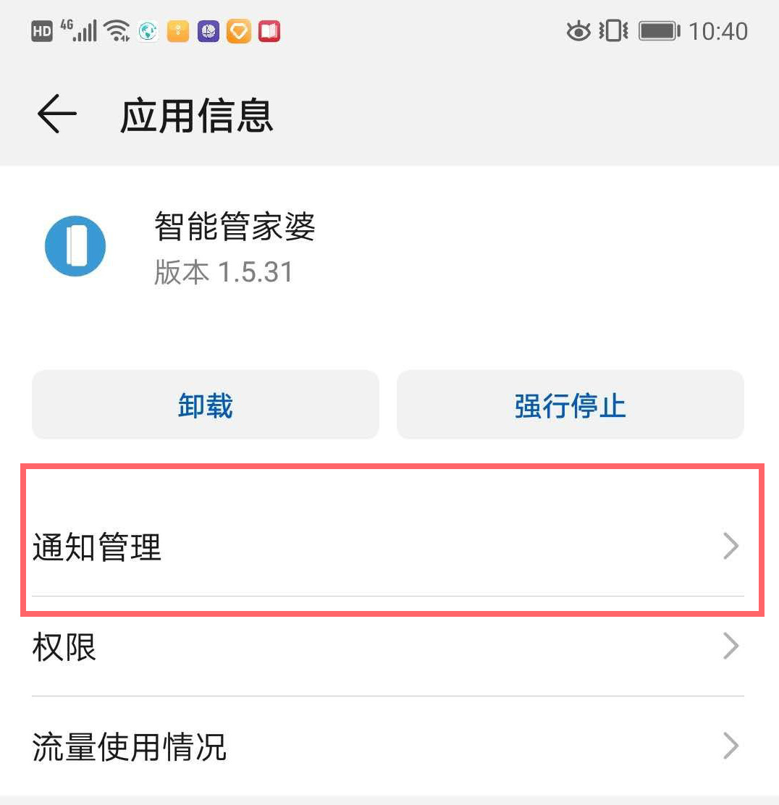
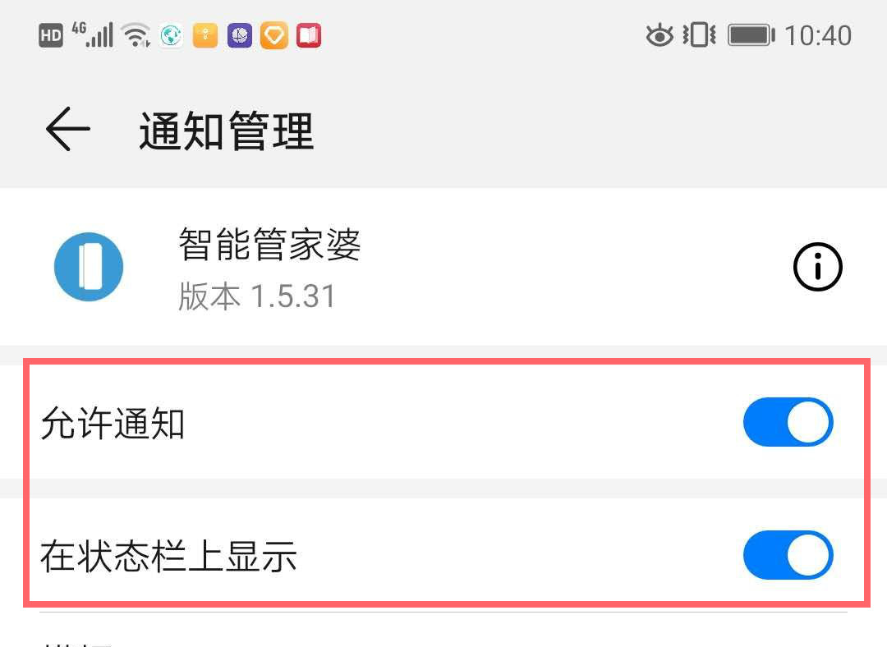
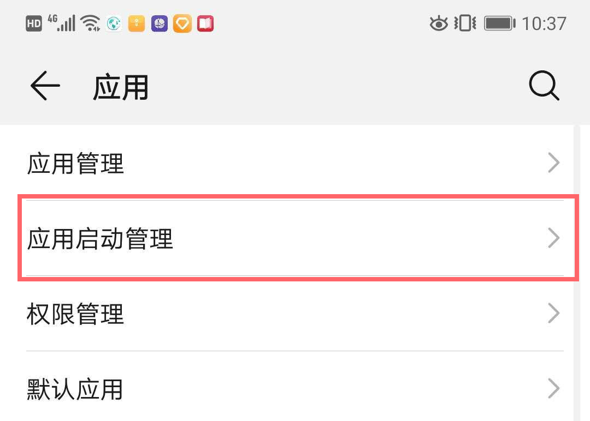

智能管家婆是配合报警器使用的app。华为系统默认不允许第三方自启动及接收通知。如果希望本app能及时的收到报警器的报警信息，需要app能够具有自动启动，开机启动，常驻后台及在通知栏接收通知的权限。必须进行以下设置：
以下步骤基于EMUI 9.0及以上版本。EMUI 8.0及以下版本请参考
EMUI 8.0设置步骤
1.打开"设置"功能

2.找到“应用“选项并点击

3.找到“应用管理”选项并点击

4.找到“智能管家婆"并点击

5.找到"通知"选项并点击

6.打开"允许通知"及以下所有开关

7.进入"设置->应用"页面，点击“启动管理"选项

8.将智能管家婆设置为"手动管理"并打开"允许自启动","允许关联启动"及"允许后台活动"